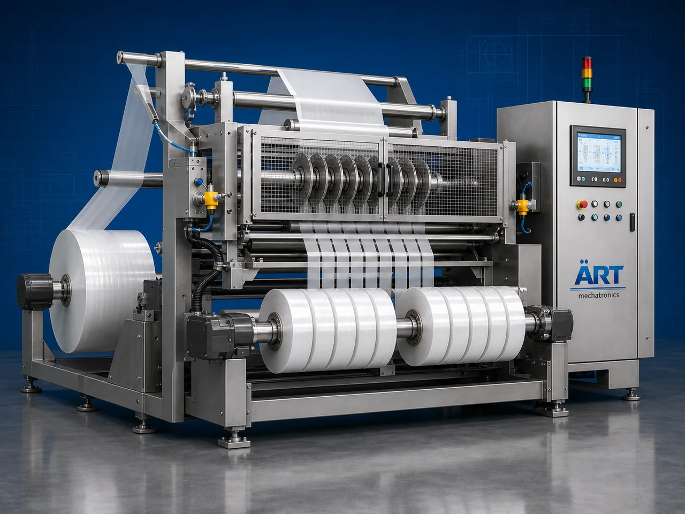

Rewinder Machine (Industrial Slitting & Rewinding System)
A Rewinder Machine, also known as a Slitting Rewinding Machine, Roll Rewinder, Film Rewinding Machine, or Industrial Rewinding System, is an advanced industrial converting solution designed for automatic unwinding, slitting, trimming, rewinding, tension control, edge alignment, roll winding, and high-speed roll handling operations for films, laminates, paper, foil, labels, flexible packaging materials, plastic rolls, printed materials, and industrial web materials.

About the Rewinder Machine
Rewinder systems are widely used for:
- Film rewinding operations
- Flexible packaging roll rewinding
- Slitting and trimming operations
- Paper roll converting
- Label roll rewinding
- Foil and laminate processing
- Printing roll finishing
- Industrial web handling operations
The machine improves:
- Roll winding quality
- Production efficiency
- Material handling accuracy
- Tension control performance
- Slitting precision
- Roll finishing quality
- Continuous production efficiency
Industrial rewinder machines use:
- Servo synchronized winding systems
- PLC and HMI automation controls
- Precision tension control systems
- Slitting blade mechanisms
- Automatic edge guiding systems
to automatically rewind and process web materials with superior roll quality and high production efficiency.
Rewinder machines are widely used in industries such as:
Flexible packaging industries Printing industries Label manufacturing industries Paper industries Plastic film industries Foil converting industries Laminating industries Industrial converting industries
where high-speed web handling, precision slitting, and superior roll finishing are essential.
The machine is highly suitable for:
- Flexible packaging film rewinding
- Paper and foil slitting
- Label roll rewinding
- Laminate converting operations
- Printed roll finishing
- Industrial web material handling
ART Mechatronics offers high-performance rewinder machines, engineered for continuous industrial operation, precision winding performance, smooth web handling, and reliable long-term industrial converting operations.
Working Principle of Rewinder Machine
- 1. Roll Unwinding & Feeding Master rolls are automatically unwound and fed into rewinding section through synchronized web handling systems.
- 2. Web Alignment & Tension Control Process Machine automatically controls web tension, alignment, and material tracking before slitting and rewinding operation.
Servo synchronization ensures smooth web movement and accurate rewinding operations.
- 3. Slitting & Rewinding Operation Machine handles: ✔ Plastic films ✔ Laminates ✔ Paper rolls ✔ Aluminum foil ✔ Labels ✔ Flexible packaging materials ✔ Printed rolls
accurately and continuously.
- 4. Roll Rewinding & Finishing Process Machine performs: Roll rewinding Precision slitting Edge trimming Tension winding Core winding Roll finishing
for smooth and export-quality roll production operations.
- 5. Intelligent Automation & Inspection Integration Optional systems include: Automatic edge guiding systems Vision inspection systems Web inspection systems Automatic knife positioning Roll diameter control systems
- 6. Finished Roll Discharge Finished rolls discharged automatically for: Packaging operations Printing operations Lamination processes Warehouse storage Export shipment handling
Types of Rewinder Machines
- 1. Film Rewinder Machine Designed for: ✔ Plastic film and flexible packaging applications
- 2. Slitting Rewinding Machine Suitable for: ✔ Precision slitting and roll converting operations
- 3. Label Rewinder Machine Uses: ✔ Label manufacturing and printing systems
- 4. Paper & Foil Rewinder Machine Designed for: ✔ Paper, foil, and laminate converting systems
- 5. Servo Driven Rewinder Machine Suitable for: ✔ High-speed precision rewinding operations
- 6. Fully Automatic Industrial Rewinding System Designed for: ✔ Complete industrial converting automation lines
Industries Using Rewinder Machines
📦 Flexible Packaging Industry Plastic films, laminates, pouches, and flexible packaging material converting systems. 🖨️ Printing Industry Printed rolls, labels, and industrial web finishing systems. 🏷️ Label Manufacturing Industry Sticker labels, barcode labels, and adhesive roll processing systems. 📄 Paper Industry Paper roll slitting and industrial paper converting systems. ⚙️ Foil & Lamination Industry Foil rolls, laminated films, and industrial converting operations. 🛒 FMCG Packaging Industry Retail packaging material and printed packaging roll systems.
Features & Advantages
- High-speed automatic rewinding operation
- Accurate slitting and web tension control systems
- Smooth and wrinkle-free roll winding quality
- PLC and servo automation control systems
- Improves production efficiency and roll finishing quality
- Reduces material wastage and manual handling
- Supports multiple web materials and roll sizes
- Reliable long-term industrial performance
- Smooth and continuous web handling integration
Technical Highlights
Machine Type: Industrial rewinder machine Slitting rewinding system Roll converting machine Material Compatibility: Plastic films Paper rolls Aluminum foil Laminates Labels Flexible packaging materials Integration: Servo winding systems Tension control systems Slitting blade systems Edge guiding systems Features: PLC control system Servo synchronization Touchscreen HMI Automatic roll diameter control Web inspection integration Applications: Flexible packaging Printing rolls Label manufacturing Paper converting Foil processing Industrial web handling Automation: Semi-automatic Fully automatic industrial systems
Turnkey Rewinding Solutions
ART Mechatronics offers: Complete rewinding systems Automatic slitting and converting solutions Industrial web handling integration systems Roll processing automation systems Installation & commissioning After-sales service & AMC
Why Choose Art Mechatronics
Expertise in industrial converting and automation systems Customized rewinding solutions for multiple industries High-performance and precision winding technology Advanced PLC and servo automation systems Proven industrial converting performance across sectors
Applications
Flexible Packaging Plants Printing & Label Manufacturing Facilities Paper Converting Industries Foil & Lamination Processing Units Industrial Roll Processing Plants FMCG Packaging Industries
Get pricing & specs for the Rewinder Machine
Share the product, target capacity, current process and plant location. These details help our engineers discuss the right machine or line configuration.
One partner, from design to start-up
ART Mechatronics designs, manufactures, installs and commissions your Rewinder Machine solution with regional presence in India, UAE and Thailand.